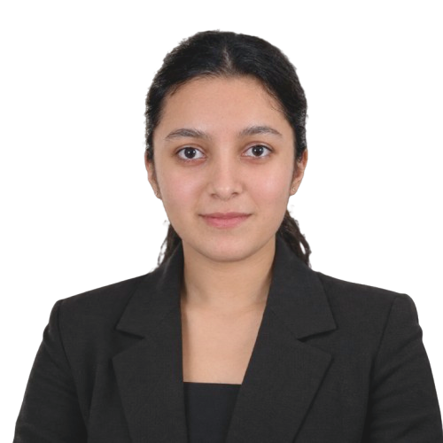

Hi, I'm Garima Yadav.
Data Analytics & Statistical Thinking
With a background in Mathematics and Statistics, I enjoy exploring data, identifying patterns and transforming complex information into meaningful insights. I use Python, SQL, Excel, Power BI and machine learning to analyse data, solve problems and communicate findings effectively.

A LITTLE ABOUT ME
About Me
I am a postgraduate in Statistics from Lady Shri Ram College, University of Delhi, with an undergraduate degree in Mathematics from Miranda House, University of Delhi.
My academic journey has given me a strong foundation in mathematical reasoning, statistical concepts and analytical problem-solving.
I am particularly interested in data analytics, statistical modelling, machine learning and data visualization. I enjoy working with datasets, understanding the story behind numbers and communicating findings in a clear and structured way.
I have applied these skills through an internship with the Department of Food & Public Distribution and independent projects involving credit card analytics, fraud detection, e-commerce analytics and electric vehicle charging infrastructure. I continue to strengthen my technical skills through practical projects and professional learning.
Areas of Interest
✦ Data Analytics
✦ Statistical Analysis
✦ Machine Learning
✦ Predictive Modelling
✦ Business Intelligence
✦ Data Visualization
MY ACADEMIC JOURNEY
Education
M.Sc. Statistics
Lady Shri Ram College, University of Delhi
2023 – 2025
B.Sc. Mathematics (Honours)
Miranda House, University of Delhi
2020 – 2023
PROFESSIONAL EXPERIENCE
Internship
Hands-on exposure to real-world data handling and reporting in a government department.
Dept. of Food & Public Distribution
Ministry of Consumer Affairs, Government of India | Sep 2026 – Nov 2026
✦ Compiled and standardised procurement expenditure data across states and marketing seasons, using Advanced Excel to organise state-wise and commodity-wise records.
✦ Conducted comparative cost analysis using PivotTables and XLOOKUP, evaluating expenditure distribution, cost per quintal and variations across procurement cost components.
✦ Performed preliminary data validation and reconciliation checks, flagging discrepancies and preparing consolidated cost statements and graphical reports to support departmental analysis and reporting.
SELECTED WORK
Projects
Independent projects applying data analytics, statistical methods and technical tools to business-oriented datasets.
01 / POWER BI & DAX
Credit Card Financial Analytics
Analysed spend, customers, revenue and credit risk across 10,293 credit card clients using Power BI and DAX. Modelled two linked fact tables with a DAX calendar, answered 15 business questions covering running totals, growth rates, acquisition cost, churn, delinquency and credit risk scoring, and built two dashboards (Transaction Report and Customer Report).
02 / PYTHON & MACHINE LEARNING
Financial Fraud Detection
Analysed financial transaction data to explore patterns associated with fraudulent activities. Performed exploratory data analysis, data preprocessing and machine learning modelling to identify potentially fraudulent transactions.
03 / ADVANCED EXCEL
Tata Power – EV Charging Analysis
Conducted an Excel-based analysis of electric vehicle charging infrastructure data. Worked with data preparation, spreadsheet analysis and dashboard-based reporting to explore charging infrastructure trends and key metrics.
04 / SQL & E-COMMERCE ANALYTICS
Amazon Brazil – E-Commerce Analytics
Analysed the public Olist Brazilian E-Commerce dataset through an Amazon Brazil-style business case study. Developed SQL queries to investigate sales performance, customer behaviour, product categories, payment patterns and delivery trends.
MY TOOLKIT
Skills & Technologies
Technical tools and analytical concepts applied through my academic and independent projects.
Programming & Querying
Python Libraries
Data Tools
Statistics & Analytics
Data Visualization
Core Skills
LEARNING & DEVELOPMENT
Certifications & Job Simulations
Professional job simulations and practical learning experiences that strengthen my analytical and technical capabilities.
Data Science Job Simulation
Boston Consulting Group (BCG) | Forage
Completion Date: 14 November 2026
Completed a practical Data Science job simulation focused on customer churn analysis for XYZ Analytics, applying data analysis, machine learning and business problem-solving techniques.
Key Responsibilities & Achievements
✦ Identified essential client data requirements and developed a structured approach to investigating customer churn.
✦ Conducted data analysis using Python, Pandas and NumPy, applying data visualization techniques to identify and interpret trends.
✦ Built and optimised a Random Forest model, achieving 50% recall in predicting customer churn.
✦ Prepared an executive summary presenting key findings and actionable insights to support business decision-making.
Credential ID: 6af810e836af9db3ebfd6a9f
View Certificate ↗CAMPUS LEADERSHIP & INVOLVEMENT
Positions of Responsibility
Academic involvement, teamwork and responsibilities that have shaped my professional approach.
Senior Coordinator
Udaan | Statistics Department
Contributed to the coordination of socio-cultural activities, team collaboration and departmental initiatives at Lady Shri Ram College.
Creative Team Member
The Placement Cell | Miranda House
Developed visual branding for placement events and workshops. Coordinated CHRYSALIS: Internship & Knowledge Fair, facilitating communication between companies and students.
Photography Head
Sankhya | Mathematics Department, Miranda House
Handled photography-related responsibilities and contributed to documenting departmental activities and college events.
PR & Graphic Member
Celluloid | The Film Club, Miranda House
Built relationships with college societies and clubs, managed creative projects and spearheaded the Birds of Paradyes kiosk at Chalchitra, engaging 100+ students.
GET IN TOUCH
Let's Connect.
Interested in discussing data, exploring opportunities or collaborating on meaningful projects? I'd love to hear from you.
Say Hello ↗